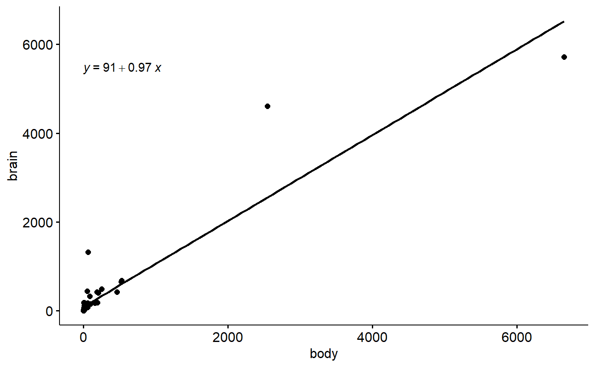

MS-3b-Results_model_equation.RmdZuur and Ieno (2016) encourage authors to present the model equation associated with their analyses (“Step 5: Present the statistical model”). This is a very important aspect of an analysis but requires you to know how to interpret R’s output and to understand what the underlying relationships which your “Statistical test” implies.
Zuur & Ieno (2016) provide some examples, but they are for fairly complex models. I am working on simpler examples.
Here are some thoughts on understanding and implementing this task
For simple regression situations we can get ggpubr to come up with the equation for us.
Some packages and data
library(ggpubr)
library(MASS)
data(mammals)A simple regression model
mod <- lm(brain ~ body, data = mammals)Look at the output
summary(mod)
#>
#> Call:
#> lm(formula = brain ~ body, data = mammals)
#>
#> Residuals:
#> Min 1Q Median 3Q Max
#> -810.07 -88.52 -79.64 -13.02 2050.33
#>
#> Coefficients:
#> Estimate Std. Error t value Pr(>|t|)
#> (Intercept) 91.00440 43.55258 2.09 0.0409 *
#> body 0.96650 0.04766 20.28 <2e-16 ***
#> ---
#> Signif. codes: 0 '***' 0.001 '**' 0.01 '*' 0.05 '.' 0.1 ' ' 1
#>
#> Residual standard error: 334.7 on 60 degrees of freedom
#> Multiple R-squared: 0.8727, Adjusted R-squared: 0.8705
#> F-statistic: 411.2 on 1 and 60 DF, p-value: < 2.2e-16The intercept is 91 and the slope is 0.97
This is an equation for
brain ~ body brain ~ intercept + slopebody brain ~ 91 + 0.97body
ggscatter(data = mammals,
y = "brain",
x = "body",
add = "reg.line") +
stat_regline_equation()
For general information on how to interpret regression equations see these papers
Boldina & Beninger. 2016. Strengthening statistical usage in marine ecology: Linear regression. Journal of Experimental Marine Biology & Ecology
Marril. 2004. Advanced Statistics: Linear Regression, Part I: Simple Linear Regression. Emergency Medicine
Marril 2008. Advanced Statistics: Linear Regression, Part II: Multiple Linear Regression. Emergency Medicine
Schneider et al 2010. Linear regression analysis: part 14 of a series on evaluation of scientific publications. Deutsches Ärzteblatt.
Zuur & Ieno. 2016. A protocol for conducting and presenting results of regression‐type analyses https://besjournals.onlinelibrary.wiley.com/doi/full/10.1111/2041-210X.12577